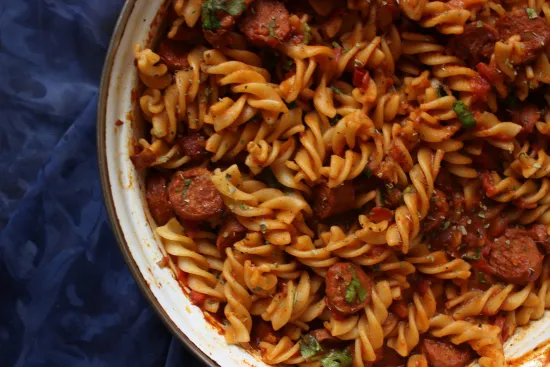

<!DOCTYPE html>
<html lang="en">
 <head>
 <meta charset="UTC-8">
 <title>Arrabiata Pasta</title>
 </head>
</html>
 <body>
    <h1>Arrabiata Pasta</h1>
    
    <h2>Description</h2>
    <p>My version of the <strong><em>Arrabiata pasta</em></strong>  with spicy red <strong><em>Italian</em></strong> sauce with a little hint of <strong>mushrooms</strong> and <strong>sausage</strong>, topped with <strong>parmesan</strong> and <strong>herbs</strong>.
        Arrabiata Pasta is a popular <strong><em>Italian</em></strong> recipe that features a sauce made with spicy red <strong>chili peppers</strong> and <strong>tomatoes</strong>
         In fact, the word “arrabiata” means <strong>angry</strong> in <strong><em>Italian</em></strong>, which refers to the bold spiciness of the dish.
          <em>Try this if you want to add some heat to your pasta night!</em> </p>
    <h3>Ingredients</h3>
    <ul>
        <li>500g of <strong>Fussili pasta</strong></li>
        <li><strong>Salt</strong></li>
        <li>5-6 <strong>Sausages</strong></li>
        <li>2 packets(140g) of <strong>Tomato paste</strong></li>
        <li>1/2 cup of <strong>ketchup</strong></li>
        <li>3 tablespoons of (american garden)<strong>Mushroom pasta sauce</strong></li>
        <li>1 tablespoon of <strong>Oregano</strong></li>
        <li>2 tablespoons of <strong>Red chiili powder</strong></li>
        <li>1 tablespoon of <strong>Crushed chilli pepper</strong></li>
        <li>2 tablespoons of <strong>Paprika</strong></li>
        <li>1 tablespoon of <strong>Mix dried herbs</strong></li>
        <li>1 teaspoon of <strong>Chinease salt</strong></li>
        <li>2-3 tablespoon of <strong>Oil</strong></li>
        <li><strong>Parmesan</strong> for garnishing</li>
    </ul>
    <h3>Steps</h3>
    <ol>
        <li>In a large pot, add plenty of water and 2 tablespoons of salt.Bring the water to a boil.</li>
        <li>Then add fusilli pasta</li>
        <li>On a medium to high heat, cook until the pasta is al dente</li>
        <li>In a colander, drain the pasta, sprinkle some oil over it-so it won't stick-and set aside.</li>
        <li>Cut sausages into thin bite-size pieces.</li>
        <li>In the same pot, add oil and fry the sausages on medium heat. Keep turning the sausages until all sides are brown and the sausages are firm.</li>
        <li>Now, add tomato paste, ketchup and pasta sauce.Mix it.</li>
        <li>Add chilli powder,paprika,crushed pepper,oregano,mixed herbs,chinease salt and mix it.</li>
        <li>Add some water(pasta water) and mix until the sauce is smooth.</li>
        <li>Add the drained pasta in the pot.</li>
        <li>Mix the pasta so the sauce is distributed evenly.</li>
        <li>Serve with some grated parmesan on top.</li>

    </ol>
 </body>